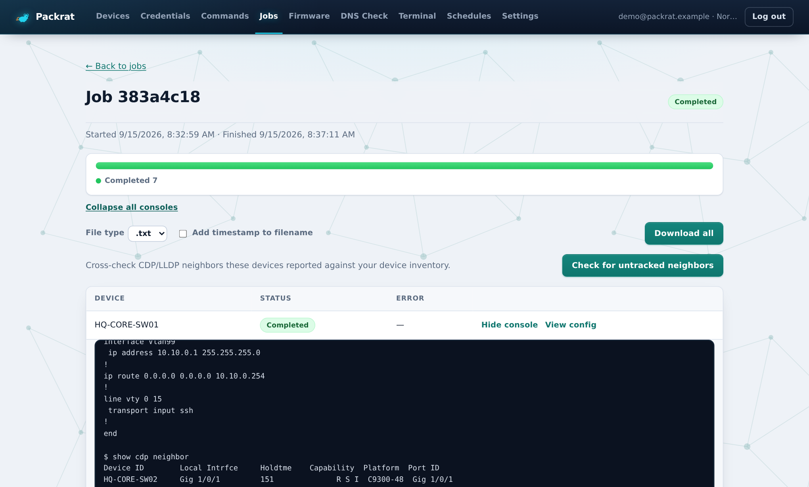
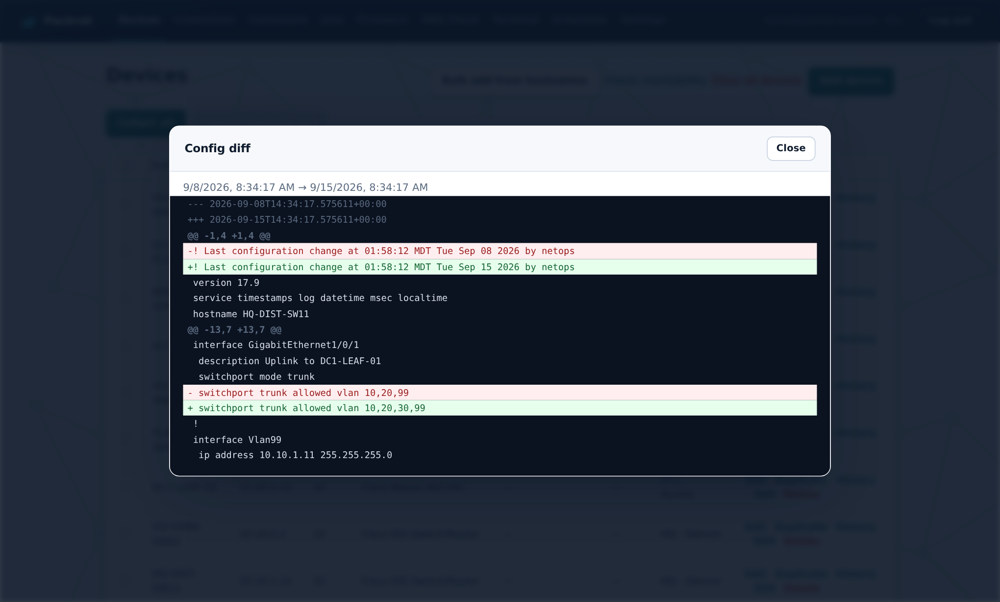
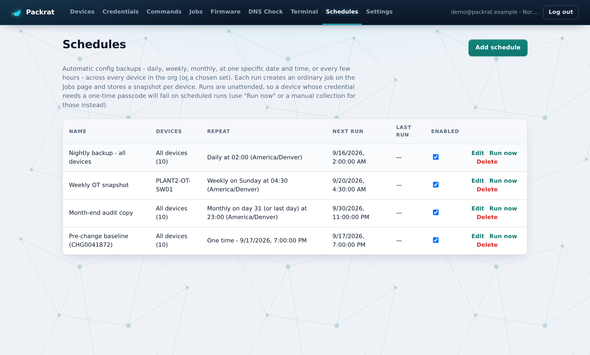
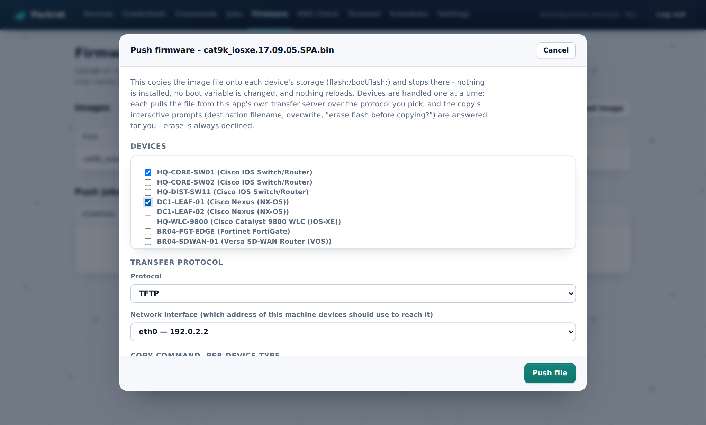
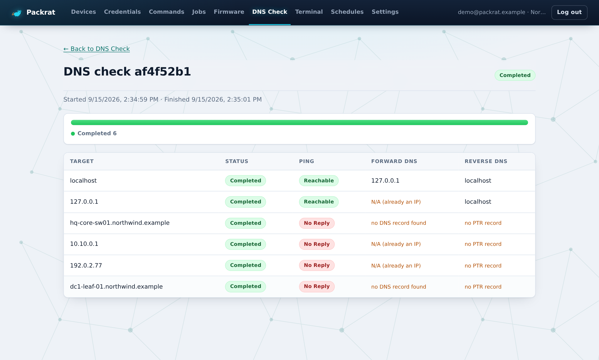
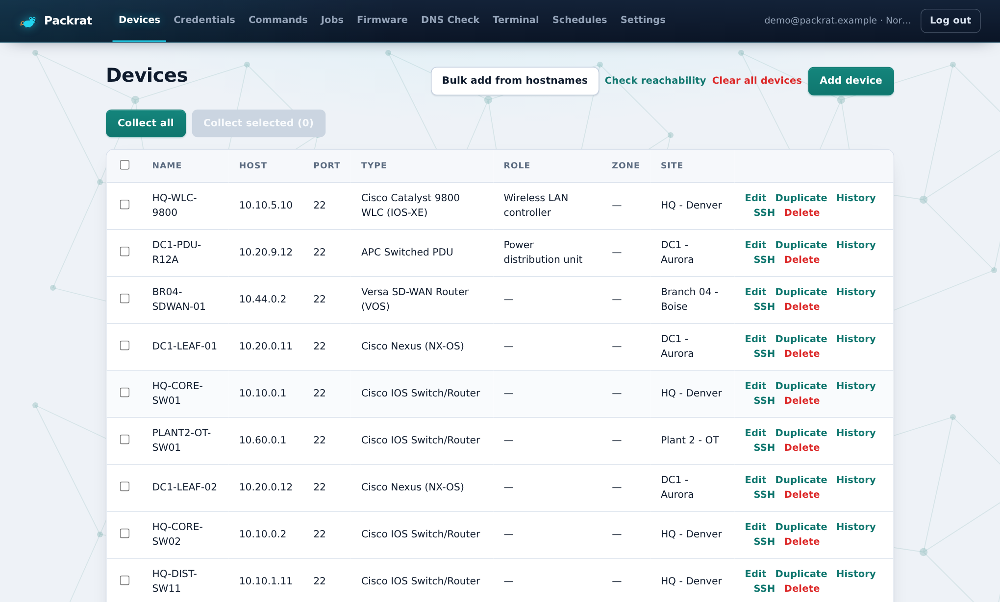

Network config backup, done obsessively
Packrat logs into every switch, controller, firewall and PDU you own, stashes the running config, and tells you exactly what changed since last time. Nightly, weekly, before a change window, or right now.
Self-hosted. Credentials encrypted at rest. Works with TACACS+, Duo push and one-time passcodes.
Connecting to 10.10.0.1:22 as netops... Authenticated. $ term len 0 $ show ver Cisco IOS XE Software, Version 17.09.05 HQ-CORE-SW01 uptime is 41 weeks, 3 days, 2 hours $ show run Building configuration... Current configuration : 6812 bytes ! hostname HQ-CORE-SW01 ! interface GigabitEthernet1/0/1 description Uplink to HQ-CORE-SW02 switchport mode trunk switchport trunk allowed vlan 10,20,99 ! line vty 0 15 transport input ssh ! end $ show cdp neighbor Device ID Local Intrfce Holdtme Platform Port ID HQ-CORE-SW02 Gig 1/0/1 151 C9300-48 Gig 1/0/1 Snapshot stored · 1 change since Sep 8
What Packrat hoards
Each module is a page in the app. Every one of them runs against your whole inventory at once, shows you a live console per device, and keeps working while you go get coffee.
Every device pinged every minute, shown green, red or amber with the last hour of checks as a bar per ping. Down after three misses in a row, an email when it happens and another when it recovers. The page you open first each morning.
Pick devices, press Collect. Packrat logs into each one over SSH, runs the show commands for its platform, streams the transcript live, and stores the config as a snapshot. Retry a single device inside the same job. Cancel mid-run. Download everything as a zip.
Every snapshot is kept per device. Pick any two and see a unified diff of exactly what changed, line by line. The "who added VLAN 30 to the trunk" question, answered in four seconds.
Nightly at 02:00, every Sunday, the 31st of each month, one specific date before a change window, or every few hours. Times are in your timezone and survive daylight saving. Each run is an ordinary job you can open.
Upload an image once, then copy it onto devices' flash over TFTP, FTP or SCP from Packrat's own built-in file server, one device at a time. It answers the copy prompts for you and always says no to "erase flash". It never installs or reloads. That part stays yours.
Paste thousands of hostnames or IPs. Packrat pings each one, resolves it forward, resolves it in reverse, and hands you a table of what is missing a record. Runs in the background with a live progress bar.
Real SSH sessions in the browser, using the same credential a collection would, MFA included. Open several devices at once as tabs, or go in out of band through a console server, with a real serial BREAK for ROMMON, when the network itself is the problem. Nothing typed is recorded.
One org-wide default, per-device overrides, a fallback account that is tried automatically, enable secrets, push-MFA wait times and passcode delimiters. Encrypted at rest, decrypted only in memory while a session is open.
After a collection, Packrat reads the CDP and LLDP tables it just gathered and lists every neighbor that is not in your inventory. The switch someone racked and never told you about, found.
How a backup runs
Packrat opens SSH with the device's credential or the org default. If the login is rejected, it tries keyboard-interactive, then the fallback account. Push-MFA users get a banner telling them to approve on their phone.
The platform's command set runs: a full audit list for IOS and NX-OS, controller-specific commands for WLCs, VDOM-aware commands for FortiGate. Edit the list per device type on the Commands page.
The output becomes a timestamped snapshot on that device. History shows every one, and any two can be diffed. Retention is a setting, not a chore.
The moment one device authenticates, the next starts its own login. Slow TACACS+ round trips overlap with fast command output, so a 300-device fleet finishes in the time the slowest logins take.
Tour

A status bar shows how far along the job is. Expand any device's console to read the transcript as it happens. Download all configs as a zip, with or without timestamps in the filenames.

Two snapshots, one diff. Here VLAN 30 appeared on a trunk between the 8th and the 15th. The rat noticed.

Daily, weekly on a weekday, monthly on a date, or one time before a change window. Described in plain words with the timezone they run in.

Pick devices, pick TFTP, FTP or SCP, pick which of this machine's network interfaces devices should reach. The copy command is prefilled per platform and editable. Nothing installs. Nothing reloads.

Paste a list, get a table. Missing PTR records and hostnames that no longer resolve stand out in orange.

Paste hostnames to add hundreds of devices at once. Roles and device types are detected from your naming conventions. Every row has one-click SSH and History.
Pricing
Every plan is the full product, self-hosted on your own machine or server. The tiers differ only in how many devices Packrat is allowed to hoard and how quickly we pick up the phone.
For a lab, a home rack, or one engineer's corner of the network.
$0forever
For a team running a campus, a data center, or a few dozen branches.
$79per month
For a fleet with thousands of devices, many sites, and an audit calendar.
Let's talk
Prices in USD. Card payments are handled by Stripe; you get a receipt and invoice by email and can cancel any time from the billing portal. Device counts are enforced by the honour system and a friendly reminder, not a kill switch. Your configs are yours and stay on your infrastructure at every tier.
Questions
No. Collection only runs show commands. Firmware push runs a copy command that writes a file to flash and stops. Nothing installs, nothing reloads, no boot variable is touched. The Terminal is the one place you can type config, because you are the one typing.
In your own database, encrypted with a key you generate. They are decrypted in memory only for the duration of an SSH session and never appear in transcripts or logs.
Yes. Set the credential's MFA mode to push and give it a generous wait, and Packrat pauses at login while you approve on your phone. For passcode-based MFA you enter a one-time code when starting a job and Packrat appends it to the password with the delimiter your AAA server expects.
On a Windows laptop with the bundled PowerShell scripts, on Linux or macOS with Python and Node, or as a Docker Compose stack with Postgres and Redis. The whole thing is a FastAPI backend, a Celery worker, and a React frontend.
Hundreds is routine. Devices are processed in a pipeline so one device's command output overlaps the next device's login, which is usually the slow part. DNS checks are chunked and have been run against ten thousand targets.
The Colony button opens a Stripe checkout: card, Apple Pay or Google Pay, with a 30-day trial before the first charge. Stripe emails the receipt and a monthly invoice, and the link in that email opens a billing portal where you can change the card or cancel. Packrat is the same download on every tier; nothing to activate today. Warren is quoted per fleet, so that one is a conversation.
Packrats hoard. They collect anything that catches their eye and keep it in a nest forever. That is the entire product strategy, and also "packet rat" was right there.